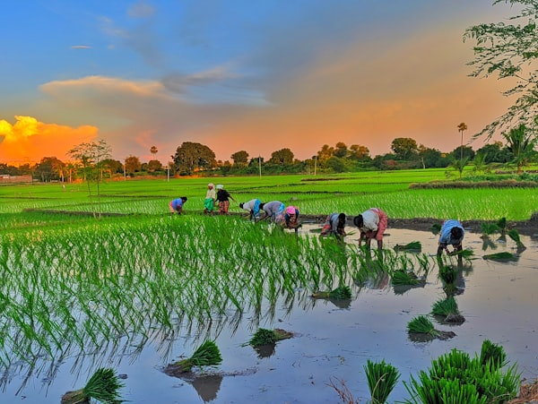

Financiamos el crecimiento de tu cosecha
Créditos flexibles y cuentas de ahorro diseñadas por y para los productores del campo.
Ver CréditosRequisitos para formar parte de nosotros
Cumple los requisitos y forma parte de nosotros.
Saber más →Nuestra Historia
Nacimos en el año 2026 bajo la sombra de un árbol, donde un grupo de 6 pequeños productores de la región decidió unir sus ahorros para financiarse mutuamente.
Lo que comenzó como un fondo solidario comunitario, hoy es una cooperativa consolidada con más de 30 socios. A lo largo de nuestra trayectoria, hemos mantenido la misma esencia: entender que el tiempo del campo no es el mismo que el de las oficinas, y que la palabra de un agricultor vale más que cualquier garantía.

Nuestros Líderes
El Consejo de Administración que vela por el patrimonio de nuestros asociados.
Kenneth Chocojay
Presidente
Productor cafetalero con 2 años de experiencia en liderazgo comunitario.
Justin Boc
Vicepresidente
Especialista en Desarrollo de Microcréditos.
Katherin Garcia
Secretaria
Encargada de la información que maneja la empresa.
Jonathan Caal
Tesorero
Encargado del manejo de ahorros y prestamos del banco.
Carlos Camey
Vocal 1
Agrónomo encargado de evaluar la viabilidad técnica de los proyectos agrícolas.
Jonathan Batén
Vocal de Tecnología
Desarrollador encargado de impulsar la digitalización y la banca en línea rural.